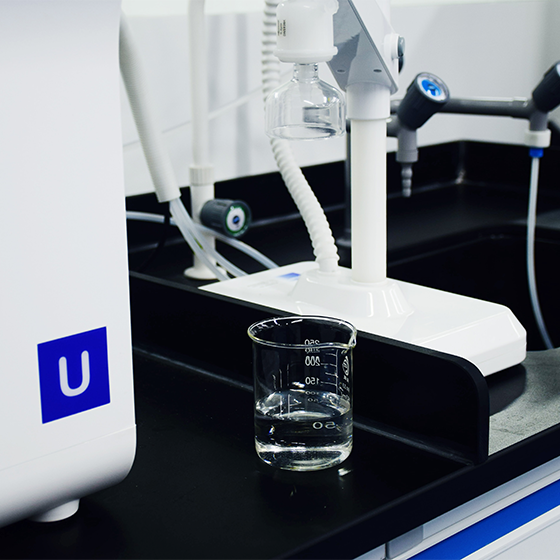

> 정밀화학 > 과산화수소
과산화수소
- 
-
과산화수소(Hydrogen peroxide, H2O2)는 강력한 산화력을 지닌, 친환경 제품으로 제지, 섬유산업의 탈색/ 표백용으로 사용 되고 있습니다.
최근에는 반도체, LCD, PCB 분야의 IT 케미칼로서 많은 각광을 받고 있으며, 폐수처리, 토양 복원등 환경 분야를 중심으로 금속처리, 의약등 다양한 분야로 용도를 확장 중에 있습니다.
제품용도 및 특성
| 반도체 / LCD | LCD, PCB 분야 Etching , 도금액 등 의 주원료로 사용되고 있으며, 초고순도 과산화수소를 이용한 반도체 Photo Resistance 제거와 Wafer 산화 세척제 등의 분야에서 사용되고 있습니다. |
|---|---|
| 종이 펄프 표백 | 각종 펄프의 표백과 고지의 탈묵에 널리 사용하고 있습니다. |
| 섬유 표백 공업 | 풍부한 표백력으로 섬유질을 손상시키지 않고, 영구적인 표백 효과로 면, 모, 견 등의 염색 공정에서 산화 표백제로 사용되고 있습니다. |
| 화학 공업 | 염소계 산화제를 대체하는 친환경 산화제로써 무공해이므로 그 용도가 더욱 넓어지고 있습니다. |
| 식품/의약 공업 | 대두유 등의 색상 조절과, 전분의 표백, 염색약 및 소독/멸균제로 사용되고 있습니다. |
| 공해 처리 약품 | 폐수 처리시 BOD, COD등을 감소시켜 주고, 처리시설의 부식을 감소시켜 폐수처리약품으로 사용되고 있습니다. |
담당자 연락처
| 분야 | 담당자 | 직급 | TEL | |
|---|---|---|---|---|
| 수출 | 윤성현 | 대리 | 02-2152-2348 | shyoon@hansol.com |
| 내수 | 고우희 | 주임 | 02-2152-2345 | whko@hansol.com |
| 내수(영남) | 권남욱 | 대리 | 053-744-4650 | nwkwon@hansol.com |